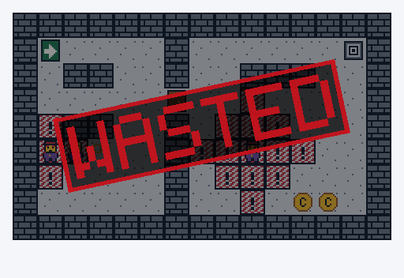

Alle Motive dürfen verwendet und angepasst werden. Eigene und übernommene Motive sind gleichwertig. In den Kapiteln ab „Datenstrukturen“ stellen Sie damit das Spiel im Fenster dar.
Die Schnittstellen und C-Beispiele liegen direkt neben dieser Seite. Jeder Aufruf erhält Renderer, x, y und Skalierung. Ein Motiv besteht aus 16 × 16 Rasterzellen. Skalierung 4 ergibt 64 × 64 Pixel. Zulässig: Skalierung 1 bis 16, x/y jeweils −10000 bis 10000. Erfolg wird mit 0, ein Fehler negativ gemeldet. Einzelheiten stehen in der Startanleitung.
./programm --galerie zeigt alle Motive im SDL2-Fenster in derselben Reihenfolge. Die Vorschauen stammen aus denselben Rasterdaten wie die C-Darstellung. Es werden keine Bilddateien vom C-Programm geladen.
Anders als die Motive oben zeichnet zeichne_wasted kein einzelnes Feld, sondern stempelt den Schriftzug schräg über ein ganzes Rechteck, zum Beispiel das Spielfeld. Aufruf mit Renderer, x, y, Breite und Höhe in Pixeln; benötigt SDL 2.0.18 oder neuer.

Gescheitert zeichne_wasted
Die Motive zeigen nur Zustände. Das Türbild öffnet noch keine Spieltür, das Überwachungsbild entdeckt noch keine Figur. Grafische Details und die Rastertechnik im vorbereiteten Baustein sind kein zusätzlicher Pflichtstoff.